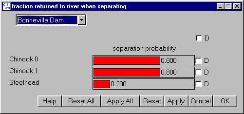

Selecting Separation Success Fractions from the Transport Tool window allows you to set the percent of each species returned to the river at each dam when separating. See the Set Transport Parameters section for details on setting other transportation parameters.
This is a Slider Input window where the slider value for a specific species can be "grouped" for all dams using the D check box. This allows you to simultaneously set the separation probability for Chinook 0 to the same value at all dams.

Separation Success Fractions window